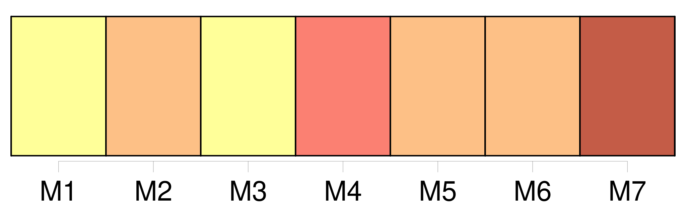
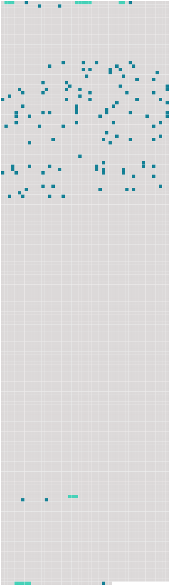

Longueur nb maillons : 120 mentions |
 |
Et [les jeunes gens] avaient confiance en [eux] [1 phrases]
[Les gens de mon âge] , empêchés de reprendre haleine, oppressés comme [des victimes] à [qui] on maintient la tête sous l'eau, se demandaient s'il restait de l'air quelque part : il fallait pourtant [les] envoyer rejoindre entre deux eaux [leurs] familles de noyés. [32 phrases] Ainsi faisait -on ce qu'on pouvait pour [nous] cacher l'existence charnelle de [nos] frères afin que [nous] fussions vraiment armés pour les tâches de curés auxquelles [nous] étions destinés. [1 phrases] Ainsi vivions [-nous] à la pauvre vitesse du sommeil : chacun sait que ce sont les grandes vitesses qui coûtent cher. [Nous] tournions comme l'on [nous] avait appris à tourner, occupés à de petits jeux de construction enseignés par tous ces fonctionnaires. Il y avait un peu partout des gens dans les campagnes et les banlieues : mais [nous] , [nous] regardions pour faire comme eux [nos] maîtres et [nos] pères tristement accroupis dans les coins, se relevant parfois pour faire rire leurs patrons, leur livrer une commande d'illusions, d'arguments ou de justifications. [1 phrases]
De temps en temps, ils priaient qu' [on] fût patient, le monde allait prochainement être sauvé.
II [Nous] sommes perdus dans leur galerie des machines où tous les coins mal éclairés dissimulent des rencontres sanglantes, guerres aux colonies, terreur blanche aux Balkans, assassinats américains applaudis par toutes les mains françaises : la terrible hypocrisie des hommes au pouvoir n'arrive pas à voiler la présence des malheurs que [nous] ne comprenons pas : [nous] savons seulement qu'ils sont là, qu'il arrive des malheurs quelque part. Ne [nous] dites pas que c'est pour [notre] bien. [2 phrases] Il y a en [nous] des divisions, des aliénations, des guerres et des palabres. On peut [nous] dire que c'est l'époque de la conscience malheureuse : cela ne [nous] empêche pas de craindre pour [notre] peau, de souffrir des mutilations qui [nous] attendent : après tout, [nous] savons comment vivent [nos] pères. [1 phrases] Où était placé [notre] mal?? dans quelle partie de [notre] vie??
Voici ce que [nous] savons : les hommes ne vivent pas comme un homme devrait vivre. [Nous] ne sommes pas satisfaits d'avance des métiers auxquels on [nous] dresse avec promesse de maigres salaires. [Nous] avons peur de ce qui va [nous] arriver : la belle jeunesse!! [2 phrases] Tout [nous] écarte d'eux : le devoir, la famille, la patrie, le respect, l'argent. C'est trop, d'ennemis pour [notre] force.
Je sais aujourd'hui que ce sont des fantômes, des reflets dix mille fois tordus que [nous] prenions au sérieux à cause de [nos] bonnes intentions : mais j'y ai mis le temps. Voici : [nous] allons entrer dans une prison dont [nous] n'arrivons pas à imaginer dans tous ses détails le régime. Quel jeune homme pensant à une prison devine ce qui se passe dans chaque cellule : ce n'est pas à vingt ans qu' [on] sait mettre la main sur les choses particulières, sur les événements. Mais [nous] en pressentons assez pour étouffer. [Nous] ne sommes pas malades d'illusions : des diminutions et des contraintes réelles menacent et [nous] ne savons pas les dénombrer. En vain vouliez -vous [nous] faire croire aux conflits candides de la liberté et du déterminisme, de la prédestination et de la grâce, de la maturité et de la puberté : s'il ne s'agit que de ces mots, [nous] ne sommes pas plus bêtes que vous : [nous] saurions faire des thèses ou prêcher dans les chaires. [1 phrases] Mais [nous] sommes faibles, l'impuissance est en [nous] , [nous] sommes dressés à l'esclavage docile depuis [notre] enfance confortable : nul moyen de dépister en [nous] les sources de l'espoir, [nous] ne sommes pas sourciers. Nul moyen de comprendre que [nous] souffrons du désœuvrement de [nos] besoins humains. [Nos] maîtres paraissent inébranlables, les machines qui laminent toutes les existences trop bien jointes pour être brisées. Mais si [nous] ne faisons rien, le chômage va durer toute la vie. Que [nous] arrive-t -il?? que ne [nous] arrive-t -il pas?? [2 phrases] [Notre] enfance y est bien pour quelque chose : les édredons de plume de la vie provinciale, [nos] premières communions, les glycines de l'été quatorze ne [nous] ont pas préparés à l'apparition de la guerre. La mort de [nos] cousins et de [nos] frères, la licence donnée par l'absence de [nos] pères, les objets meurtriers de [nos] aînés ont fourni au désordre de mystérieux aliments : c'était celui de l'enfance miraculeusement soustrait aux complots pacifiques de l'ordre : la guerre [nous] a permis de vivre. [2 phrases] Comptant sur les misères du temps pour former des cœurs héroïques et l'amour de la vertu, les professeurs et les mères ont pris peu de soins pour [nous] habituer aux valeurs morales qui coulèrent à pleins bords entre quatorze et dix-huit. [1 phrases] Grâce à une erreur si grossière, à l'âge viril, [nous] ignorons bien des drames : mais on se met trop tard à [nous] enfoncer dans la tête les Lois comme des réclames sur la vérole : comment y croire, [nous] n'y voyons que des chaînes effrayantes pour un homme, des chaînes qui [nous] entaillent la vie. Être un homme [nous] paraît la seule entreprise légitime : [nous] sommes désespérés en découvrant que tant de beaux devoirs auxquels il fallait [nous] faire croire dix ans plus tôt ne laissent rien debout dans l'amour de la vie. Aimer la vie que ces devoirs [nous] font?? [3 phrases] Les combattants vidés de toute leur guerre entretiennent cette flamme aussi fidèlement que le gaz imbécile sous l'Arc-de-Triomphe : éclatants de l'orgueil insolent d'avoir été forcés aux sacrifices, ils exploitent devant [nous] les morts nationaux. [3 phrases] [Nous] y pensons encore faiblement, mais ces gens -là sont pour [nous] les défenseurs bruyants de la loi, les prophètes de [nos] devoirs. Rien ne [nous] concerne dans ces fables : [nous] cherchons quelque chose de réel à nous mettre sous la dent : ils [nous] arracheraient le pain de la bouche. La faim et la faiblesse corrompent [nos] paroles et [nos] premières actions : les livres qu'on [nous] donne ont l'air écrits dans des allées de cimetière. Les partis [nous] font des propositions en plein jour. Les messages que [nous] lançons [nous] retombent sur le nez. [Faisons] quelque chose. [2 phrases] [On] se divertit, [on] boit en bandes : nuits consolatrices. [On] entre dans des cinémas : il y a au moins la chaleur animale, les femmes dont [on] touche les genoux et qu' [on] accompagne. [1 phrases]
[Nous] faisons comme les hommes. [Nous] connaissons encore des femmes. [1 phrases] Cette jeune femme purifiée des alluvions de sa ville natale n'est qu'un corps ennuyé sur les frontières d'un désert, mais ses genoux écartés, les ciseaux noirs et blancs de ses cuisses suffisent provisoirement à l'amour de la liberté, dans ces années où une bouche humide peut seule [nous] sortir de [nos] habitudes. [1 phrases] Tout cela dure des mois et des mois : on veut [nous] faire croire que c'est la croissance, mais [nous] savons qu'il n'y a pas de raisons pour que cette vie finisse, puisque tous les hommes vivent comme [nous] , tournant comme des chauves-souris. Comme [nous] ignorons [nos] compagnons de révolte dans le fond des campagnes et les hôtels meublés de Billancourt, [nous] ne pensons qu'à fuir. [2 phrases]
Mais [nous] du fond de [notre] bourgeoisie comment deviner que les fondements de [notre] peur et de [notre] esclavage sont dans les usines, les banques, les casernes, les commissariats de police, tout ce qui est pays étranger. [165 phrases] On peut insulter cette lâcheté, les insultes n'empêcheront pas [les jeunes gens] de prendre les lézards pour des sauriens sortis de la préhistoire.
Le jour où les sirènes lâchent leurs aigrettes de vapeur et leurs cris d'accouchées sur les échos des docks, [ils] attendent en échange de ce qu' [ils] abandonnent une liberté inconcevable des forces nues, et restées nues depuis Adam. [45 phrases]
Mais [les gens de mon âge] vivaient dans l'attente de n'importe quoi, des célèbres coups de foudre de l'aventure : bonnes histoires de [nos] gardiens. |
 |
Il est possible de télécharger la ressource sur la page Ortolang |
Si vous avez des questions ou vous voyez des erreurs, merci d'envoyer un mail à silvia.federzoni89@gmail.com |